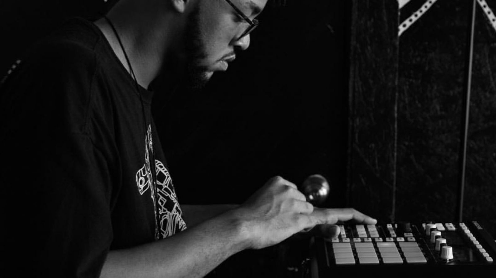
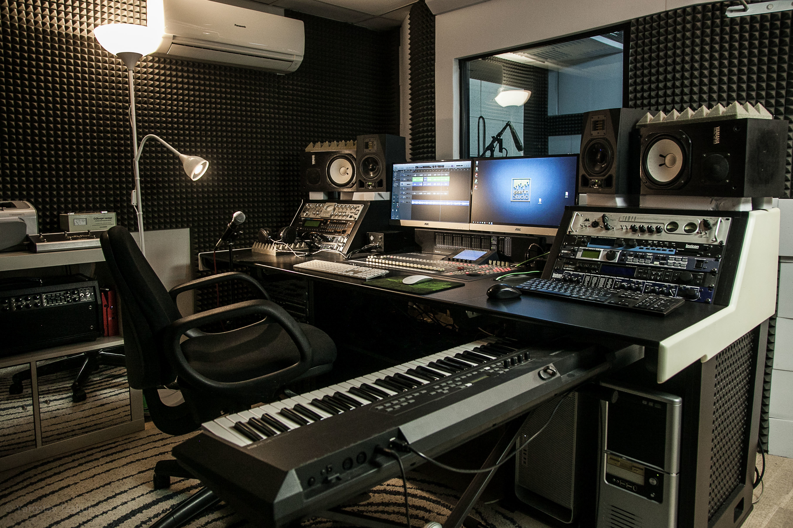
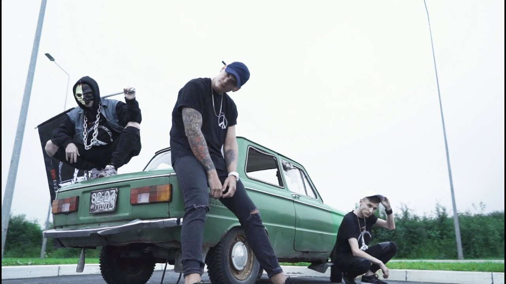
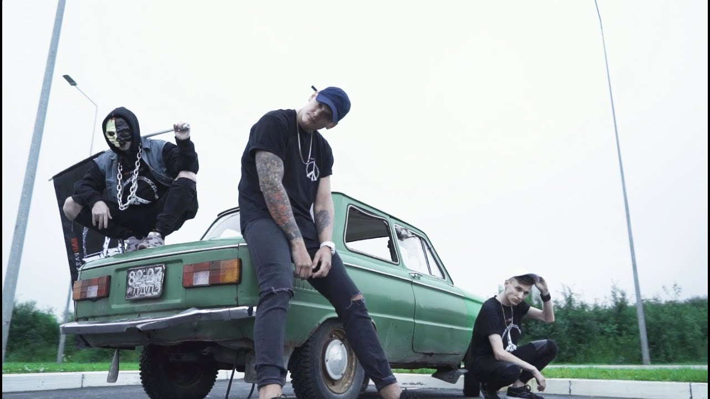

|
Битмейкер — это и композитор, и аранжировщик, и диджей, и продюсер звукозаписи. Бит — основная часть музыки (трека), на которую артисты исполняют свои треки. Битмейкер выполняет функции композитора и аранжировщика. В то же время, профессия битмейкера отличается от музыкального продюсера тем, что битмейкер занимается только битом, а продюсер — песней в целиком, отвечая в том числе за правильность исполнения, внося предложения в текст песни.
Битмейкеры наиболее востребованы в хип-хоп-музыке. Они создают готовые аранжировки, поверх которых может быть наложена вокальная дорожка исполнителя. Основными источниками дохода битмейкеров является продажа или аренда битов, написание музыки под заказ, а также получение роялти за авторские права на музыкальные фрагменты. Битмейкеры, как правило, также занимаются смежными профессиями, давая мастер-классы, выступая в роли диджеев и так далее[1][2].
В отличие от хип-хоп-исполнителей, чьи имена у всех на слуху, битмейкеры, как правило, не так известны[3]. Среди известных битмейкеров русского хип-хопа White Punk (работал с Кизару и Pharaoh), Empaldo Beats («Розовое вино»), Mnogoznaal, Scady (Billy Milligan, Oxxxymiron, Энди Картрайт, Johnyboy), Palagin (Black Star), Big Baby Tape, 4EU3 (Мезза, Рем Дигга, Yanix), Capella, Скриптонит и другие[4].. Все актуальные новости о музыке вы также можете прочитать на нашем сайте, без регистрации.
  White Punk - один из лучших битмейкеров в России родом из города Пенза. Он обладает уникальным стилем, в котором смешивает разнообразные жанры. White Punk был участником таких известных коллективов как FrozenGangBeatz и Dead Dynasty. Интерес к написанию битов проявился у него ещё в детстве, когда он услышал совместку Нелли Фуртадо и Тимбалэнда "Say It Right". В 2013 году начал записывать музыку под никнеймом PHVANTXM. В тот период он написал бит для Кизару, под который Олег записал песню "Делай как надо". Затем он сменил свой псевдоним на White Punk и в 2015 году выпустил проект "Remixes Are Dead". В 2016 году Pharaoh выпустил альбом "Phosphor", за продакшен которого полностью отвечал музыкант из Пензы. В 2018 выпустил первый альбом "Вампирь" как исполнитель. Этот релиз стал для него переходным на новую ступень карьеры. В следующему году записал намного более проработанный альбом "Паук". В пластинку вошли фиты с такими хип-хоп исполнителями как Платина и Хаски.Дополнительная информация: |
|---|
 
